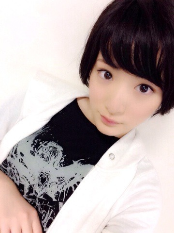

| 2014/03 26 Wed | 汗ダラダラっヽ(・ ∀・)ノ |
今日はZIP!春フェス2014でしたっ！
来て下さった皆様ありがとうございましたヽ(・∀・)ノ
今日乃木坂46を初めて見た方も、知ってるけどあまり詳しくなかった方もいらっしゃったと思いますが、少しでも皆さんの思い出に残っていたら嬉しいですヽ(・∀・)ノ
新曲。
気づいたら片想いは初めてフルで披露しました〜！
おいでシャンプーの曲中にZIP！deポンをやりました！
めちゃ楽しかったです

また来年もよろしくお願いしますヽ(・∀・)ノ
ありがとうございました〜！！！！

あ。
総選挙の事。
私はぶっちゃけYahoo！ニュースを見て知りました。
それを見た時そりゃそうだよね。
私出れるんだよね〜って思って。
夢じゃない現実だって実感して。
自分で最終的に決断した事なのですが、まだわからないんです。
でもどうなんだろう〜とか考えて。。。
う〜ん。
正直よくわかりません。
立候補制なので、するのかしないのか。
乃木坂でいうプリンシパルなのかな〜とかいろいろ考えたら頭からぼふって音がしました。
今ブログを書いている瞬間もよく自分の考えがわかりません〜。
〜〜〜。
最近ずっと心の何処かで考えています〜。
｡･*･:≡( ε:)
最終的に決めるのは自分です。
プラスにするのも自分です。
う〜んう〜んう〜ん。
考えますね。
でもどうなるにせよ。
私は自分で決めた事にちゃんと向き合っていきたいです。
それが成長出来る物だと信じて。
でもな〜〜〜〜
う〜〜んう〜〜〜ん
考えます。
とりあえず寝ます。
へばなっ！☆
コメント(1019)
2014/03/26 23:54